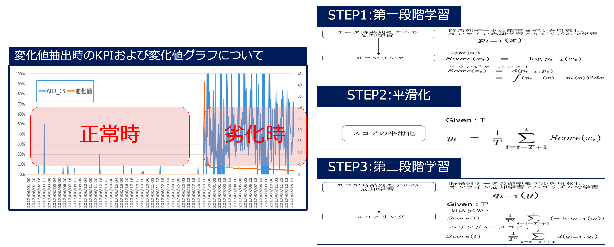
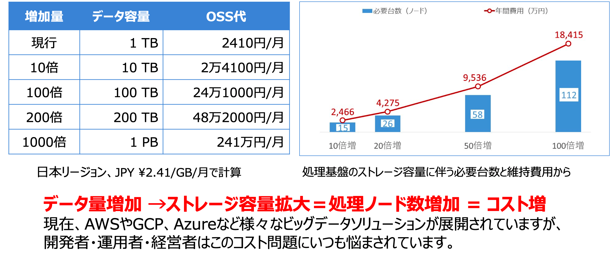

BigDataとは
BigDataとは
現在、私たちの生活の中にはあらゆる様々なものがデジタルデータとして生成・蓄積されています。
例えば水道、電気、天気、ネットワーク、工業、ショッピング、教育、病院、スポーツ、農耕、etc…
IDC調査によれば 2025年になるとデジタルデータはZbの領域に入ります。
※ 1Zb = 125EB = 125000PB = 125000000TB
このデジタルデータはどこから発生してるのか。具体例を見てみましょう。

- 1回のMRIスキャンで20,000枚の画像取得。
- Googleは1日あたり35億の検索クエリを処理。
- Instagramユーザーは毎分54,000枚の写真を投稿。
- 自律走行車は毎日11TBのデータを生成。
- Twitterユーザーは、毎秒3,000のTweetを投稿。
- LINEは毎日2600億のメッセージを通知。
これらはいつも発生し続けてるそれぞれの単なるデータ量ではなく、そのデータから重要な情報を抽出し、ビジネスでの意思決定に活用できてこそ、初めてビッグデータと呼びます。
逆に、この収集・蓄積したデータを二次、三次活用できてなければ、それはビッグデータとはいえません。例をあげますと、自律走行車の場合、車体のあちこちに様々な観点でのカメラを設置し、走行中にデータを収集しています。そこで人がいる位置、車が通る道路、交差点とのタイミング、駐車位置、などなどを動画/画像認識で抽出し、これを元にどう自律で攻略するかプロラミングを組んだり、自律走行用のMapを作成しています。Tesraが発行した1つの都市分の自律走行用のMapデータで20億ドルの価値が出たりとしています。
このように、ビッグデータはビジネス上の様々な問題に対処できることから、ビッグデータの存在はいつの間にか巨大なビジネスの場へ展開しています。
ビッグデータとビジネスの関係
この生成し続けるデータは、ビジネス上の意思決定を裏付ける価値があります。この価値を発掘するまではただのデータとして役立たないので、ビッグデータを運用する際はデータを収集・蓄積するだけでなく、分析、解析の流れが必要になります。ビッグデータはデータ量が増えれば増えるほど、ビジネスに対してより正確かつ確実に意思決定を行うことができます。例えば、以下の例があります。
- データ・ビジネスに対する様々な精度向上が可能
- 問題解決・未来予測において、より的確な解決策が見つかる
- ビジネス上、必要な断捨離ができる
- データ維持・運用システムやコスト削減の取り組みが可能
これらについてもううちょっと説明します。
データ・ビジネスに対する様々な精度向上が可能
様々なデータの中には事業やビジネスを阻害する異常データ、不正データなどが混じっています。
これらを検知し、撲滅することで問題は解決します。しかしそれだけでしょうか？例えば時系列のデータで、1時間おきに100億のデータがあり、0.001%の確率で異常データ、不正データが出るとしたら、次の新しいデータが来るまでの短い時間でどうやって検知しますか？ その解決策として、機械学習を使います。機械学習とは大量のデータを反復的に学習し、そこに潜むパターンを見つけ出すことです。そして過去データを学習した結果（数式およびパターン、変化値を特定するためのスコアや変数、パラメータ値）を新たなデータにあてはめることで、パターンにしたがって異常検知や将来予測ができます。

このように、今後新しいデータが出るとき、異常データ・不正データを検出するときは過去のデータを遡って、変化値が大きいものを検出します。そういう意味ではビッグデータは非常に重要な存在になります。
異常検知のみならず、将来の予測、データのグループ分けなど、機械学習/深層学習/強化学習をすることもできます。しかし、データ処理をするにおいてサンプルら母数が少ないと、既存データに対するアプローチ精度が保証できない課題があります。言い換えれば、データが多ければ多いほど精度が高い=確実論で事業に対する意思決定の裏付けが可能です。
問題解決・未来予測において、より的確な解決策が見つかる
ビジネス上、様々な問題に直面します。例えば売上が下がってる、20代のお客様層が少ない、購入ユーザが少ない、今後の需要予測、１億円売上を作りたい、etc… これらは今あるビッグデータを使えば解決できます。
現状抱えている問題（設問）は基本的に以下２つへ分類されます。
発生タイプ：あるべき姿は設定される（受動的）
・目標不達成問題・・・業務目標と現状のギャップが生み出す問題（ビジネス的に一番発生する問題）
・異常発生問題・・・過去の延長戦上、問題が発生。維持すべき現状から遺脱し、ギャップが生まれるケース。原因究明と対策立案/実行の緊急性が高い
設定タイプ：あるべき姿は目標を決めてる（能動的）
・設定型問題・・・現在の問題に対して、改善革命活動のように、積極的に新たな到着目標を設定することで発生する問題
・将来型問題・・・これからどこを目指していくべきかなど、将来のあるべき姿を描き、それと今を比較して、問題を定義する（例:半年後に1億円を目指す、etc）
この分類後、問題（設問）を整理するOPQ分析へカテゴライズすると、本当の問題を確認できます。同時にそれに対する解決策を発見しやすくなります。
- O：Objectice 望ましい状況 依頼者が考えている達成すべき目標や改善後の姿
- P：Probulem（問題、現状とObjectiveのギャップ） 依頼者にとっての問題
- Q：Questicon（依頼者の疑問） Problemに直面した依頼者かが抱くだろう疑問（依頼者の視点で）
- A：Answeer（答え、メッセージ） Querstionに対する回答
これをデータ上で行うのはどうでしょうか。問題設問を様々な分類へカテゴライズした上で、既存のデータに対し5W1H形式で順次絞って対処する必要があります。
ここにて元となるデータが少ない、実績や実例がない、過去数年前のデータと比較できない、数値的な根拠が弱いなどと、参考となるデータが少ないと確認や根拠取りに時間がかかります。そういう意味ではビッグデータは非常に重要です。

ビジネス上、必要な断捨離ができる
ビッグデータは売上や業務成績をチェックするだけでなく、既存のデータを様々な角度から見える化を実施することで、必要な断捨離、経営課題を分析、最終的にはビジネスとして意思決定ができます。
例えば、過去と同じ環境や条件で年間売上推移、失注率の比較、データをマトリクス図に散布して業務の断捨離、効率化のポイント絞り、新メニューの導入判定、価格変更アプローチ、というのが可能になります。ビッグデータがあれば、業務で工数削減や効率化、断捨離などと様々な決断をつけることができます。

データ維持・運用システムに伴うコストの課題あり
BigDataはデータを維持するのに年数百万〜数十億円以上かかります。AmazonWebServiceにしろ、AlibabaCloudにしろ、データを持つのにお金がかかります。
例えば、AlibabaCloud OSSで1TBのデータを持つ場合、1GB 2.41円/月（2019/09/01 時点）なので、1TBのデータを維持するのに月2,410円かかります。これが10倍、10TBとなったら月24,100円、100TBとなったら月241,000円、1PBとなったら月241万円かかります。他のクラウド会社でも、オンプレミスでも同じです。それだけではありません。データ収集基盤、ETLら加工基盤、分析基盤でこれだけの規模となると、処理に必要な台数（ノード）が増えます。そのため、現在ビッグデータに関する多様多種なシステム（ETLツール、クエリエンジン、BIツール、etc）が色々出ていますが、結局のところ適材適所の問題なので、ビッグデータを担当する人々はコスト削減と処理の効率化、工数削減を求めて様々なソリューション探り、マイグレ、システム改善の日々が続いています。

前置きが長くなりましたが、eコマース、農業、ヘルスケア、金融、教育、社会や消費者に役立つビッグデータは私たちの生活や社会、未来を作るのに欠かせない重要な存在となっています。これを踏まえ、AlibabaCloudはビッグデータに力を入れており、実際、ビッグデータから分析、AI、RPA、様々なプロダクトへ連携、進化させてくれます。例えばMaxComputeはDouble 11 Global Shopping Festivalにて1日600PBを超えるデータを処理し、ピーク時のオンライントラフィック時間に1秒あたり3,400,000件のトランザクションをサポートしました。 このように、AlibabaCloudのBigDataはEB級のデータでもシームレスに抽出加工処理できており、またAlibabaCloudのビッグデータの良いところは多様多種なビッグデータに全て対応できることです。AlibabaCloudのBigDataの活用により今の業務やライフスタイルを楽に、そしてビジネスとして新たな価値を生み出すことができれば大変幸いです。